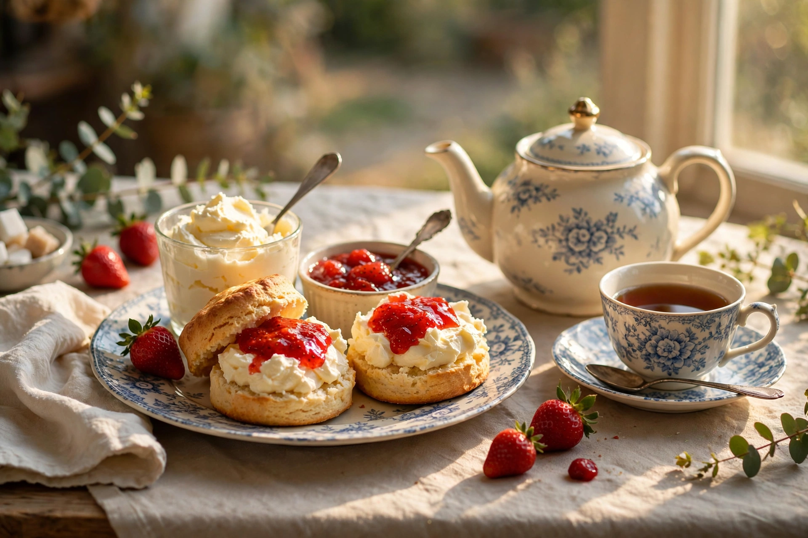

From Wikipedia, the free encyclopedia

| Scone | |
|---|---|
| Type | Quick bread / cake |
| Place of origin | Scotland / Great Britain |
| Main ingredients | Wheat (or oat/barley) flour, baking powder, butter, milk |
| Serving | Split, with jam and clotted cream; afternoon tea |
| Variations | Fruit, cheese, potato (tattie), treacle; American biscuits |
A scone is a baked good, usually made of wheat flour (traditionally also oats or barley) leavened with baking powder, lightly sweetened, and sometimes glazed. Originating in Scotland and now emblematic of British baking, the scone is a basic component of the cream tea and afternoon tea: it is split in two and spread with jam and clotted cream. Scones are closely related to the American biscuit and to griddle-cooked quick breads found across the British Isles.
The word "scone" is first recorded in Scots in 1513. Its origin is debated: it may derive from the Middle Dutch schoonbrood ("fine/white bread") or from the Gaelic sgonn (a shapeless lump); a popular folk etymology links it to the Stone of Scone (Stone of Destiny) at Scone Abbey, where Scottish kings were crowned — generally considered fanciful. Early scones were flat, round, unleavened oatcakes cooked on a griddle and cut into triangular quarters (farls). The modern oven-baked scone, leavened with baking powder, became standard in the 19th century, when afternoon tea — popularised from the 1840s by Anna, Duchess of Bedford — created demand for dainty baked goods. By the Victorian era the scone was a tea-table fixture across Britain and the Empire.
The pronunciation of "scone" is a celebrated British shibboleth: surveys (such as the 2016 Cambridge/YouGov study) find a majority in the north of England and Scotland rhyme it with "gone" (/skɒn/), while the south more often rhymes it with "stone" (/skoʊn/) — with usage cutting across class as much as region. The joke form of the long-running dispute asks whether the word rhymes with the name of the Stone or with "gone" — and is compounded by the Devon–Cornwall quarrel described below.
British scones may be plain, or contain sultanas/raisins (fruit scones), cherries, or cheese (savoury cheese scones, often made with mustard and cayenne). Scottish varieties include the flat griddled potato scone (tattie scone) served with a cooked breakfast, treacle scones, and drop scones (similar to small pancakes). In Utah and neighbouring US states, "scones" are instead a fried yeast-dough bread, closer to Native American frybread, served with honey butter.
The classic serving is the cream tea: scone, jam, and clotted cream. The order of application is a matter of regional pride — the Devon method puts cream first, then jam; the Cornish method puts jam first, then a dollop of cream on top. Cornish protected status for the term "Cornish cream tea" was debated in the 2010s, and the rivalry is conducted with genuine (if good-humoured) intensity, including at royal and parliamentary tea rooms.
American biscuits are the scone's closest relative: both are baking-powder quick breads of flour, fat, and milk. Biscuits, however, are strictly savoury, use softer winter wheat and more fat worked to a flakier crumb, and are served with meals (notably biscuits and gravy), while British scones are lightly sweetened, slightly denser, and belong to the tea table. American coffee-shop "scones" — triangular, crumbly, and often glazed — are a distinct, richer development of the British original.